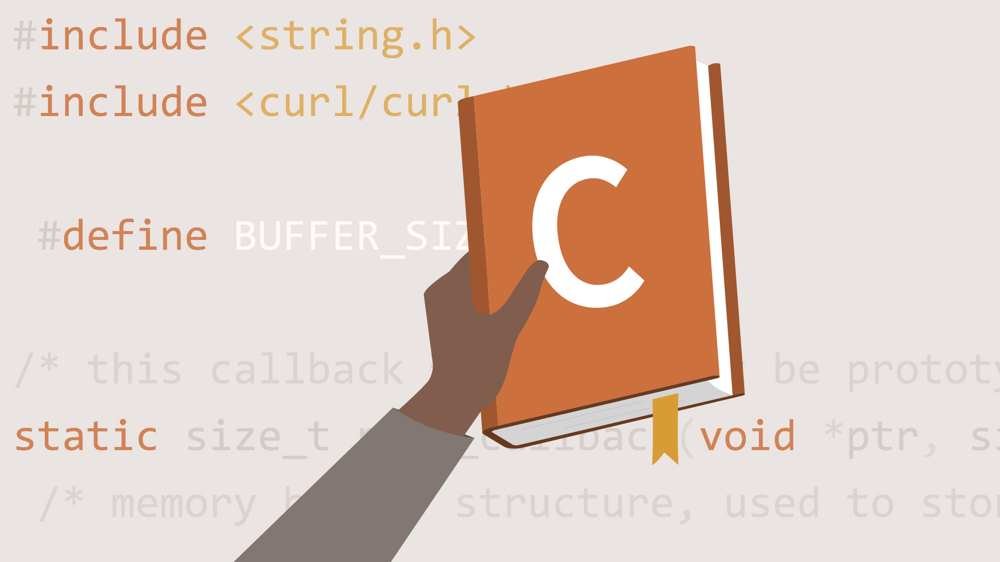

This is a very popular and interesting topic now a days, everyday we use social media where we share images. We perform some actions on image like cropping image, drawing shapes, writing text etc. These all acts are part of image processing.
Subprocess module is very much important for those who want to create tools like IDE/Online Compiler or any application which has a feature to invoke some other application or functionality.

Making a library is very essential in projects so as to avoid re-writing of code. In this blog I will demonstrate how to create C/C++ library for Linux environment.